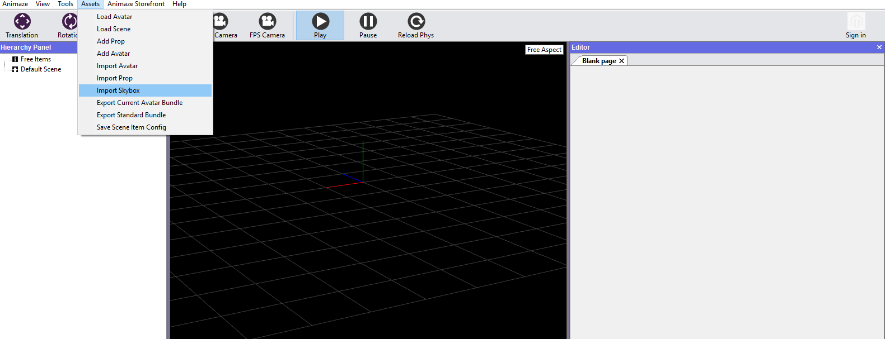
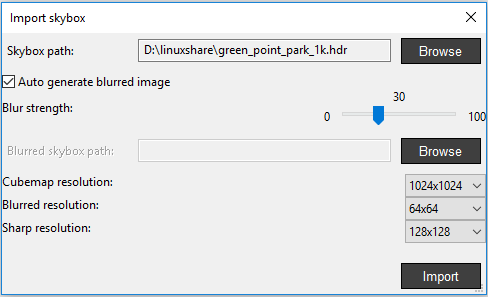
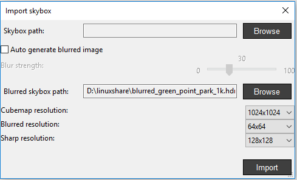
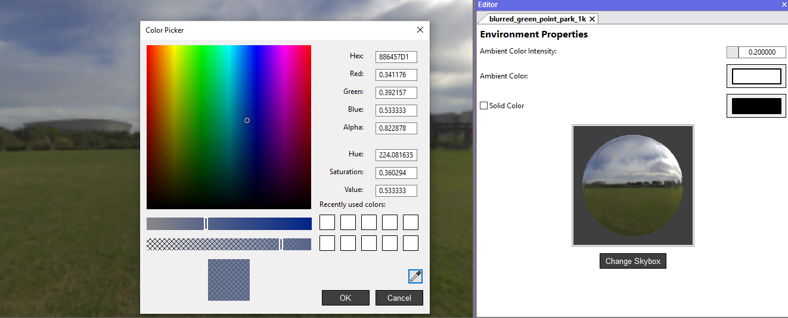
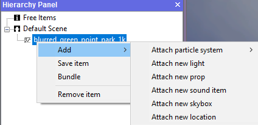

How do I import a Skybox?
Animaze can import HDRI (.hdr) cubes that are translated to Animaze friendly cubes.
Skyboxes can be customized with an ambient light that shade the characters and props even if there is no light setup available.
Skyboxes can also be set to a specific solid color, for a greenscreen scenario. The advantage of this option is that you can blend the character on anything, while still retaining the proper reflections.
Requirements: .hdri file
To import a Skybox, follow the steps below:
- Go to Assets menu and select Import Skybox

- Browse for your .hdri file in the Skybox path, where you can check the Auto generate blurred image box and control the effect with the Blur strength slider

- Or Browse for your already blurred .hdri image

- You can change the cubemap resolution, blurred and sharp resolutions as well from the drop-down lists of each
- Click Import when done
- Environment properties can also be modified in the Editor Panel
- Set the Ambient Color Intensity value manually or by sliding the mouse over the value box
- Clicking the Ambient color will open a Color Picker dialog box for you to set it or pick a solid color and tick the correspondent box

- Right-clicking the skybox in the Hierarchy Panel will show options as attaching particle systems, lights, props, sounds and location

Lights can be customized by modifying the type, position, rotation, scale color and intensity of it.
- Right-click your skybox in the Hierarchy Panel once finished the customizations, and choose Save item or Save item as…